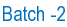

URL:
http://celos.ac.in/index.php?seminars
Home
»
Academics
»
Course Structure
Array Antennas
- Sujith Manjooran
Biomedical Spectroscopy
- Jithin Jose
Black Holes
- Priya Rose
Cellular Communication
- Sujith Manjooran
Confocal Microscopy
- Jithin Jose
Crystal Field Theory
- Priya Rose
Crystal Growth and Epitaxy
- Harish Natarajan
Digital Image Processing
- Ranjini Reghunandan
Dye Lasers
- Sreeja Thampi
Electron Energy Loss Spectroscopy
- Harish Natarajan
Fiber Amplifiers
- Nimi Gopalakrishnan
Fiber Bragg Grating
- Aparna Das & Nimi Gopalakrishnan
Fiber Cables
- Nimi Gopalakrishnan
Fiber Communication Systems
- Deepak V
Fiber Fabrication Techniques
- Deepak V
Fiber Lasers
- Harish Natarajan
Fiber Optic Bio-Sensors
- Ranjini Reghunandan
Fiber Splicing
- Ranjini Reghunandan
Fluoride Glass Fibers
- Jaya Mathews
Fourier Transform Spectroscopy
- Harish Natarajan
Holography
- Jaya Mathews
Inter-atomic Forces and Bonding in Solids
- Harish Natarajan
Laser Applications
- Aparna Das & Deepak V
Laser Aspects
- Deepak V
Laser Induced Fluorescence
- Ancy Paul
LIDAR
- Sreeja Thampi
Life-time based Bio-Imaging
- Ranjini Reghunandan
Light Wave Networks
- Sreeja Thampi
Liquid Crystals
- Jaya Mathews
Magnetic Monopoles
- Priya Rose
MASERS
- Jithin Jose
Micro Electro Mechanical Systems
- Jithin Jose
Microwave Antenna
- Sujith Manjooran
Microwave Devices
- Sujith Manjooran
Molecular Spectroscopy
- Ancy Paul
Mosbaur Spectroscopy
- Ancy Paul
Multi Photon Processes
- Priya Rose
Nano-particles
- Aparna Das
Neural Networks
- Nimi Gopalakrishnan & Priya Rose
Neutron Scattering Spectroscopy
- Harish Natarajan
Non-linear Optics
- Nimi Gopalakrishnan & Priya Rose
Non-linear Fiber Optics
- Priya Rose
Nuclear Fusion
- Aparna Das
Optical Amplifier
- Ancy Paul & Sujith Manjooran
Optical Biosensors
- Greshma Narayan
Optical Coherence Tomography
- Jithin Jose
Optical Detectors
- Priya Rose
Optical Nose
- Greshma Narayan
Optical Space Communication
- Sujith Manjooran
Optical Tweezers
- Jithin Jose
Organic Light Emitting Devices
- Sreeja Thampi
Phase Conjugate Optics
- Jaya Mathews
Photo-detectors
- Ancy Paul
Photo Dynamic Therapy
- Ranjini Reghunandan
Photoelectric Effect
- Ranjini Reghunandan
Photonic Crystals
- Ranjini Reghunandan
Physics of Football
- Aparna Das
Plasma
- Nimi Gopalakrishnan
Polymer Optical Fibers
- Sreeja Thampi
Radio Astronomy
- Sujith Manjooran
Satellite
- Sujith Manjooran
Soliton Communication
- Sreeja Thampi
Simple Harmonic Motion
- Ancy Paul
Single Crystal Fiber
- Ancy Paul
Spatial Light Modulators
- Jaya Mathews
Stellar Evolution
- Ranjini Reghunandan
Super-conductivity
- Ranjini Reghunandan
Super-fluidity
- Ranjini Reghunandan
Super-luminescent LED
- Sreeja Thampi
Thermal Radiation
- Aparna Das
Thermal Sensors
- Jaya Mathews
Ultra-fast Processes
- Harish Natarajan
Vapour Power Cycles
- Aparna Das
Virtual Reality
- Aasif Muhammed
X-Rays
- Harish Natarajan

3-D Microelectronics
- Adil Masood
Anthropic Principle
- Deepa Kamath
Atom Physics
- Nitish Kumar
Carbon Nanotubes
- Adil Masood
Charge Coupled Devices
- Anusree Kandoth
Deterministic Chaos
- Saurabh Raj
Digital Image Enhancement
- Varun Gupta
Digital Light Processing Devices
- Anusree Kandoth
Dye Doped Fibre Amplifier
- Nitish Kumar
Fate of the Universe - Dark Matter, Dark Energy and the Cosmological Constant
- Varun Gupta
Fibre Optics
- Nitish Kumar
Fibre Optic Sensors
- Anusree Kandoth
Fluoride Glass Fibres
- Renuka Parameshwaran
Fractals
- Renuka Parameshwaran
General Theory of Relativity
- Saurabh Raj
Global Positioning System
- Varun Gupta
Health Hazards of Ionizing Radiations
- Renuka Parameshwaran
Holographic Memory
- Varun Gupta
Laser and its Application
- Nitish Kumar
Lasers and Laser Tissue Interaction
- Saurabh Raj
Laser in Medicine and Biology
- Saurabh Raj
Light Tissue Interactions
- Bansely Abdu
Matrices -
Saurabh Raj
Medical Application of Lasers
- Renuka Parameshwaran
Nanotechnology
- Varun Gupta
Night Vision
- Anusree Kandoth
Optical Computing
- Adil Masood
Optical Fibre Communication
- Bansely Abdu
Optical Interconnections at Chip Level
- Adil Masood
Optical Sensors
- Bansely Abdu
Photonic Aspects of Modern Radar
- Anusree Kandoth
Photonic Packet Switching
- Deepa Kamath
Photo Refractive Effect
- Bansely Abdu
Polymer Photonics
- Nitish Kumar
Quantum Computers
- Deepa Kamath
Quantum Key Distribution
- Deepa Kamath
Quantum Teleportation
- Deepa Kamath
Ring Laser Gyros and its Application
- Bansely Abdu
Self Electro-optical Effect Device
- Adil Masood
Semiconductor Devices
- Nitish Kumar
Silicon Integrated Nano Photonics
- Varun Gupta
Solid State Lighting
- Saurabh Raj
Special Theory of Relativity
- Saurabh Raj
Super CCD
- Anusree Kandoth
Super String Theory
- Adil Masood & Deepa Kamath
Theory of Everything
- Adil Masood